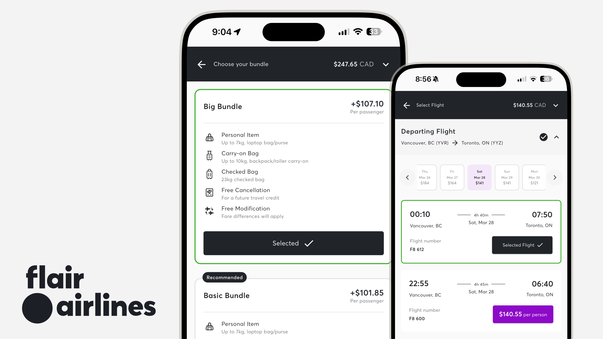

Timeline
2 months (May - June 2025)
Toolkit
Figma, Storybook
Role
As a UX/UI Designer at Flair Airlines, I evolved the design system to introduce a modern, responsive and scalable foundation across mobile app and web experiences.
Outcome
The updated design system launched on the Flair Airlines mobile app in March 2026.
As part of Flair Airlines' broader effort to modernize its digital products, I evolved the design system to support a mobile-first experience and align with the airline's refreshed brand direction.
The original design system had been optimized for desktop. Many components relied
on horizontal layouts, excessive white space, and large typography that did not
translate well to smaller screens.
The system also used a complex colour palette, where multiple accent colours could appear within a
single screen, making it difficult to establish a clear visual hierarchy.
When scaled to mobile, these components resulted in inefficient layouts, excessive scrolling, and reduced information density.